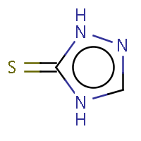
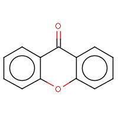
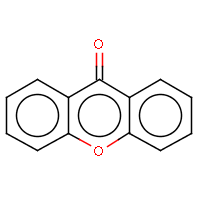
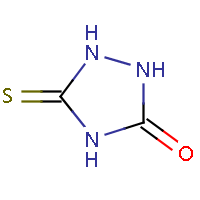

An aromatic molecule is one in which electrons form a continuous pi cloud above and below the circular arrangements of atoms. In one representation these atoms are connected by alternating single and double bonds. Another representation is that of the circular pi bond, in which the electron density is evenly distributed through a pi bond above and below the ring. The circulating pi electrons in a aromatic molecule generate significant local magnetic fields that can be detected by NMR techniques. Aromatic molecules typically display enhanced chemical stability, compared to similar non-aromatic molecules.
This commonly seen model of aromatic rings was developed by Friedrich August Kekulé von Stradonitz and was first explained in quantum mechanical terms by Linus Pauling in the 1930s. In 1931, Erich Hückel devised the "4n+2" pi electron rule, valid for planar molecules with a single ring. Molecules having 4n+2 pi electrons (n >= 0) are expected to be aromatic.
Two types of transformation to aromatic representation are implemented in Marvin, both are based on the Hückel's 4n+2 rule.
All transformation methods work only in structures which are in non-aromatic representation. If the molecules are in partially aromatic form (containing any aromatic bond) the transformation method may fail.
Aromaticity detection (level 1)
Process: locate the ring atoms in the molecule connected with single and double bonds respectively, sum the number of electrons and if the Hückel's rule is valid, then the ring is aromatic.
There are some exceptions:
- Where the double and single bonds are not sequential but the ring is aromatic. In this case the atom between single bonds has an orbit which takes part in the aromatic system. (Relevant atoms: N, O, P, S, As and Se when they can donate a free electron-pair to the aromatic system and B when it can donate a molecule orbit without additional electron.)
- Rings with less than 5 members are not aromatic.
Daylight compatible aromaticity detection (level 2)
The method is the same as before, just the exceptions are different.
Locate the ring atoms in the molecule connected with single and double bonds respectively, sum the number of electrons and if the Hückel's rule is valid, then the ring is aromatic.There are some exceptions:
- Oxygen and sulfur can share a pair of pi-electrons.
- Nitrogen can also share a pair of pi-electrons, if it has three ligands, otherwise the sp2 nitrogen shares just one electron (as in pyridine).
- An exocyclic double bond to an electronegative atom takes out one shared pi-electron from the cycle, as in 2-pyridone or coumarin.
- Phosphorus cannot be aromatic at all.
Some molecule's aromaticity is questionable. The two method approach the question differently. The Daylight's (level 2) method tries to incorporate mesomeric, tautomeric rearrangement, as in 2-pyridone, while the level 1 method does not. In the level 1 method the external double bond breaks the formation of aromatic ring.
The following molecules will give different results depending upon the method applied.
| IUPAC name | Molecule in aliphatic form | Aromatization (level 1) | Aromatization (level 2) |
|---|---|---|---|
| pyridin-2(1H)-one | |
|
|
| 2-thioxo-2,3-dihydropyrimidin-4(1H)-one | |
||
| 2,4-dihydro-3H-1,2,4-triazol-3-thione | |
|
 |
| 9H-xanthen-9-one |  |  | |
| 5-thioxo-1,2,4-triazolidin-3-one |  | ||
| imidazo[1,5-a]pyridine-3(2H)-thione | |
|
|
| [1] | www.daylight.com/dayhtml/smiles/smiles-convent.html |
| [2] | Open discussion forum about aromatic forms |